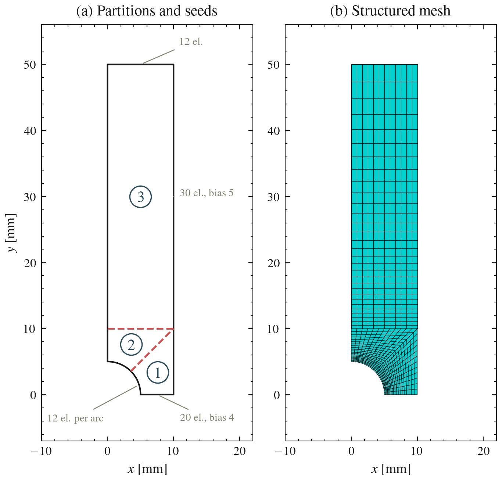
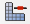
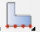
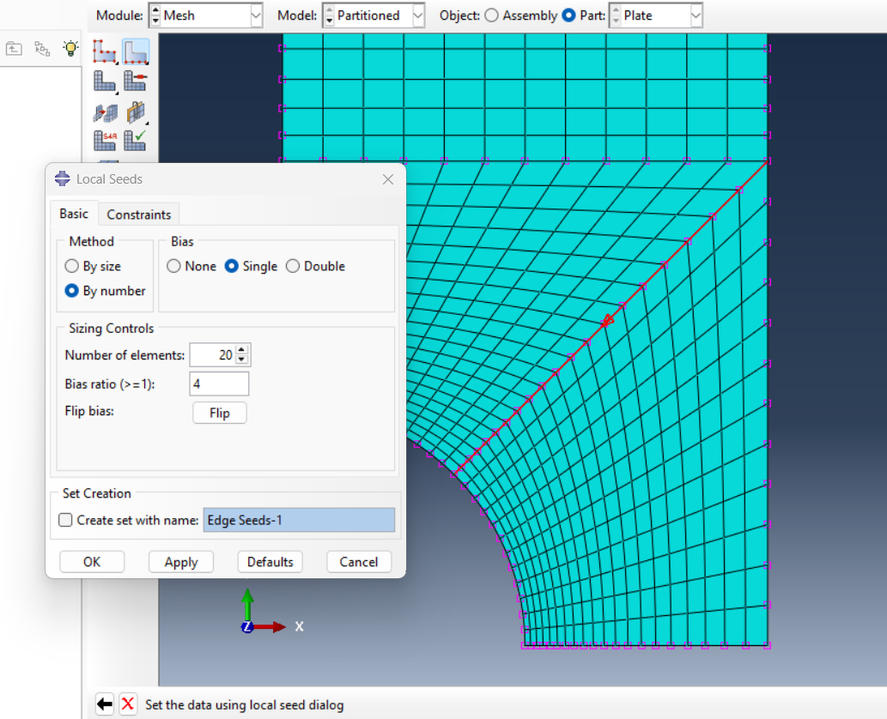
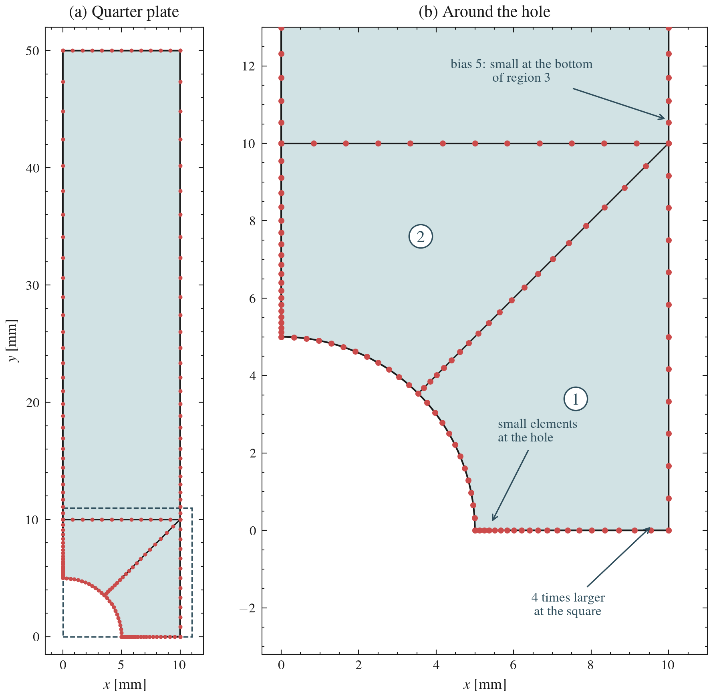
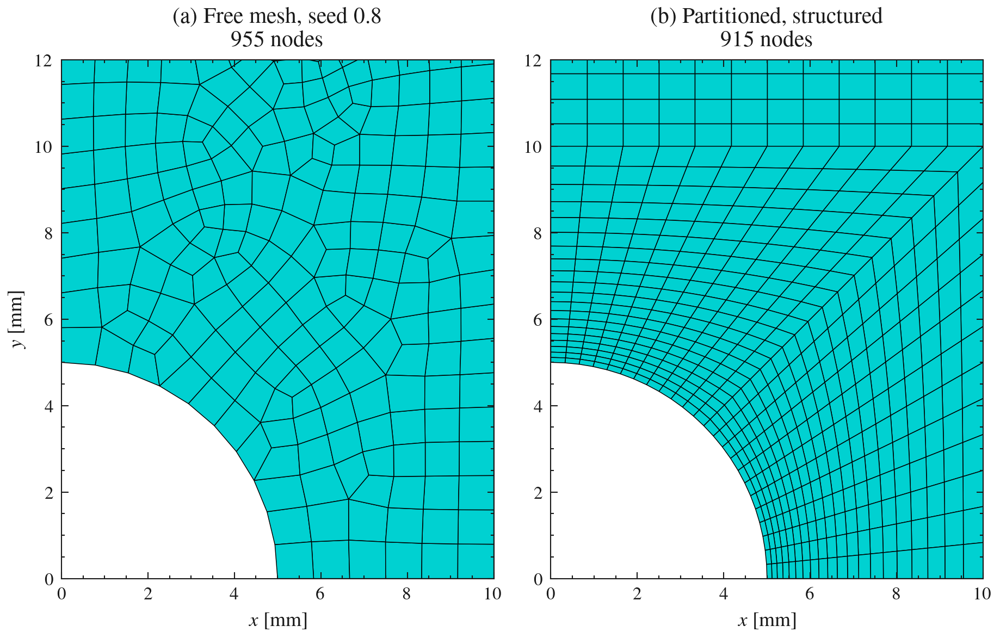
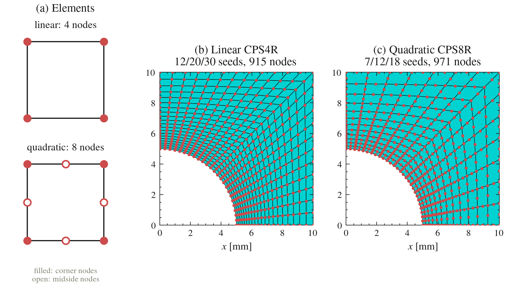
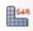
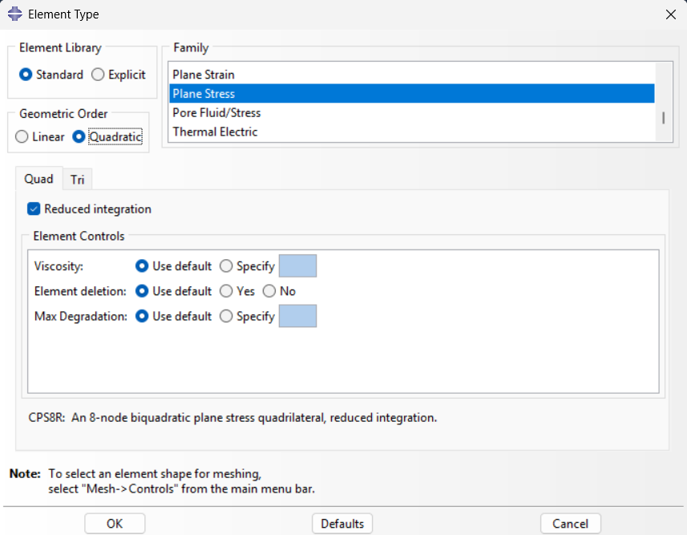
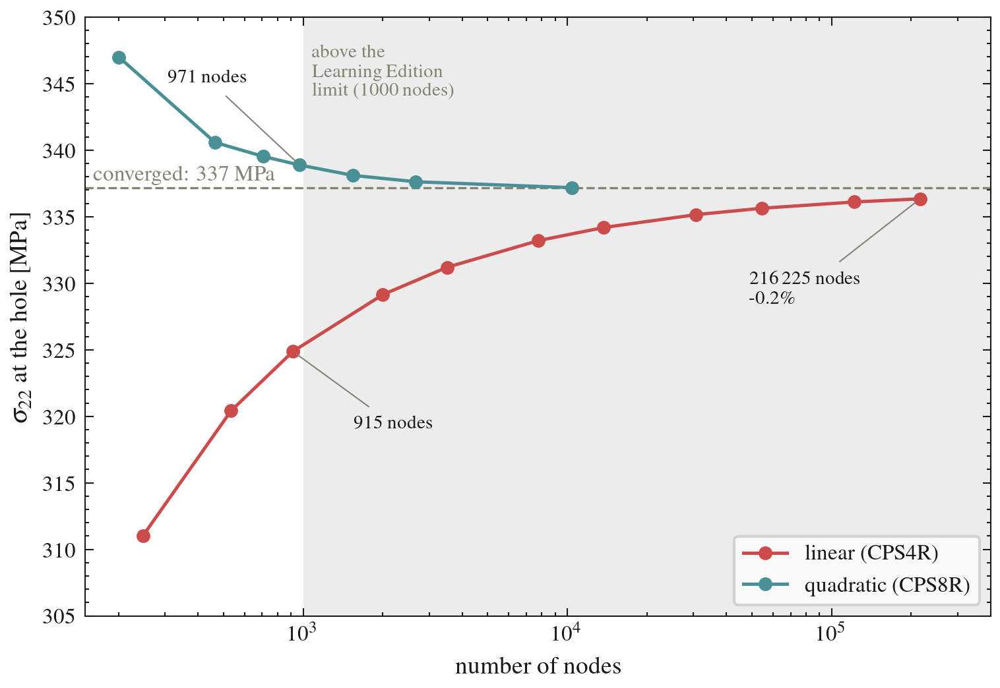

Getting a good mesh: partitions around the hole
In Part 2: Taking Advantage of Symmetries we reduced the plate to a quarter and used the saved elements to refine the mesh. However, the mesh was still free: Abaqus decided where the elements go, and it put as many elements far away from the hole (where nothing happens) as close to it (where everything happens).
There is a second reason to be careful with the mesh. The Abaqus Learning Edition (the one you can install at home) is limited to 1000 nodes. So we cannot just keep reducing the seed size until the results look nice. If our goal is to analyze what is happening around the hole, then we need to add more elements there. That is the goal of this tutorial.
The usual way to do this is to partition the part into simple regions, which can then be meshed with a structured mesh that follows the shape of the hole.
The rest of the model (material, section, step, symmetry conditions and the RP with the kinematic coupling) is exactly the same as in Part 2: Taking Advantage of Symmetries.
The idea is shown in Figure 1 (a). We split the quarter plate into three regions with two lines:
Regions 1 and 2 now have four sides each and region 3 is a simple rectangle. Partitioning the model is nothing more than “organizing” our geometry in the way we want it. It is often useful to define different material properties, different sections or different meshes. In this case we are using it to improve the mesh quality so that we can use a structured mesh. And, if you are wondering how to choose these partitions, there is no single right answer. It is mostly a matter of common practices. Around holes, the usual approach is a 45° line from the hole to the corner of a square “box” around it. The 45° line splits the region around the hole into four-sided pieces, which is what a structured mesh needs. The box should be large enough that the stress has almost returned to its far-field value at its edge. Here we placed it at 10 mm, twice the hole radius, but this distance can be higher or shorter. Any partition that gives four-sided regions and puts small elements near the hole works just as well.

In the Part module, there are several partitioning tools and it may seem overwhelming initially. All we need for this example are the 2D partitioning tools, which are these icons . The one on the left partitions an edge and the one on the right partitions a face (or an area).
The video below shows the two steps:
Now, in the Mesh module, we tell Abaqus how to mesh each region. Change the mesh controls (second row & second column in the mesh module

) to: \(\text{Quad} \; \rightarrow \text{Structured}\) Select all three regions at once. This will change the colour of your regions from pink (free) to green (structured). If a region turns orange, Abaqus cannot mesh it with this technique, which usually means the partition lines do not meet the edges exactly.Usually, the colours in Abaqus always have a meaning behind it and change based on the module you are working on. If you are curious about a certain colour, you can always look for the icon .
Instead of a global seed size, we now seed the edges one by one with a fixed number of elements. Go to the seed icon

or: \[\text{Seed} \; \rightarrow \; \text{Edges} \; \rightarrow \; \text{Method: By number}\]For the edges going away from the hole we also add a bias, which makes the elements small near the hole and larger further away. Choose \(\text{Bias: Single}\) and set the bias ratio (largest element / smallest element). After applying the seeds, check in the viewport that the seed marks are closer together near the hole; if they are the wrong way round, use Flip and pick the edge again.

Figure 4 shows what the seeds of Table 1 should look like. On the radial edges and on the vertical edges of region 3 the seeds crowd together towards the hole. On the arcs, the sides of the square and the top edge they are evenly spaced.

| Edges | Number of elements | Bias ratio |
|---|---|---|
| Each 45° arc of the hole | 12 | – |
| Sides of the square and top edge (\(x\) direction) | 12 | – |
| Radial edges (from the hole to the square) | 20 | 4, small at the hole |
| Vertical edges of region 3 | 30 | 5, small at the bottom |
Generate the mesh and check its size with \(\text{Tools} \rightarrow \text{Query} \rightarrow \text{Mesh}\). You should get 915 nodes and 840 elements.
Figure 5 compares the free mesh from Part 2 with the new partitioned mesh, near the hole. They have almost the same number of nodes, but in the partitioned mesh the elements follow the hole and are much smaller exactly where the stress is highest.

Table 2 shows the highest stress in the loading direction, \(\sigma_{22}\), at the edge of the hole. To know which value is “right”, I also ran a reference model with a very fine mesh (far too many for the Learning Edition), whose peak no longer changes when the mesh is refined.
| Mesh | Nodes | \(\sigma_{22}^{max}\) (MPa) | Error |
|---|---|---|---|
| Free, seed 0.8 (Part 2) | 955 | 274 | −19 % |
| Partitioned, structured | 915 | 325 | −4 % |
| Reference | - | 337 | – |
With the same number of nodes, the partitioned mesh reduces the error from 19 % to 4 %. This peak is exactly what we are interested in in Part 5: Stress Concentrations.
The only way to know if your mesh is good enough is through a mesh convergence study. Here we keep refining the mesh until the value looks more or less converged.
There is one more choice we have not touched yet. The element type. So far we have been using the Abaqus default for a 2D planar part, CPS4R: Continuum, Plane Stress, 4 nodes, reduced integration. This is a linear element: the displacement varies linearly between its 4 corner nodes, so the stress is (almost) constant inside each element. To follow a stress that changes quickly, like at the hole, we need many small elements, and each one only gives us the average stress over its area, which is always a bit lower than the true peak.
A quadratic element, CPS8R, has an extra node in the middle of every edge (8 nodes in total, Figure 6 (a)). The displacement now varies quadratically, so the stress can vary inside the element. The mathematics behind it is not important at the moment, but if you are curious, Klaus-Jürgen Bathe explains how these elements are built in his free MIT lecture Formulation and Calculation of Isoparametric Models.
Of course, we pay a price for using quadratic elements, we have more nodes per element: with the same 1000-node budget we get fewer, larger elements as shown in Figure 6.

Now, inside Abaqus, to switch the element type, in the Mesh module go to element type

: \[\text{Mesh} \; \rightarrow \; \text{Element Type} \; \rightarrow \; \text{select all regions} \; \rightarrow \; \text{Geometric Order: Quadratic}\]Keep Family: Plane Stress and Reduced integration ticked; the description at the bottom of the dialog should say CPS8R. Because every element now carries its midside nodes, the 12/20/30 seeds would give 2669 nodes, so we need to reduce the mesh to 7 per arc, 12 radial and 18 vertical (same biases as before, and 7 on the square sides and the top edge) to fit the student version. If you mesh it again and you Query it, you should have 971 nodes and 294 elements. Obviously, if you are not limited by the Student Version, you can keep the previous seeding.

How much better is it? Figure 8 shows a small convergence study. The same partitioned model meshed coarser and finer, with both element types.

| Elements | Seeds | Nodes | \(\sigma_{22}^{max}\) (MPa) | Error |
|---|---|---|---|---|
| Linear, CPS4R | 12/20/30 | 915 | 325 | −4 % |
| Linear, CPS4R | 192/320/480 | 216 225 | 336.3 | −0.2 % |
| Quadratic, CPS8R | 7/12/18 | 971 | 339 | +0.5 % |
| Quadratic, CPS8R | 24/40/60 | 10 377 | 337.2 | +0.02 % |
As seen in the results the difference between the amout of nodes we need for reach convergence for quadratic and linear is huge. The quadratic mesh is within 0.5 % of the converged value with fewer than 1000 nodes (and about 1 % off already with 464 nodes). The linear elements approach the answer from below, and they do get there close to the solution until we used around 200 000 nodes.
As a rule of thumb, use quadratic elements when you care about stresses in a smooth part, like here. Linear elements are fine for displacements and stiffness, and are the usual choice in explicit dynamics and some contact problems, where you need many elements anyway.
From now on, for the next tutorials in Part 4: Outputs and Post-processing, Part 5: Stress Concentrations and Part 6: Material Models, we use this quadratic mesh with 971 nodes.